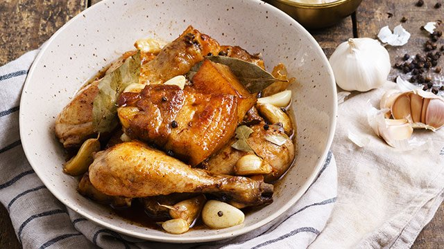

Pork and Chicken Adobo

Mouth watering Pork and Chicken Adobo
One of the most popular Filipino Dish is Adobo.
The saltiness, a little sweet and sour taste makes it so delicious.
Together with the mouth watering texture and aroma makes it so good.
This time, we will combine Pork and Chicken meat for the Adobo recipe.
Ingredients:
- 1 lb pork belly chopped
- 1 lb chicken cut into serving pieces
- 3 pieces dried bay leaves
- 2 teaspoons whole peppercorn
- 3 head garlic slightly crushed
- 6 tablespoons white vinegar
- 1 cup black soy sauce
- 1 tablespoon oyster sauce
- 2 teaspoons brown sugar
- 2 cups water
- 3 tablespoons cooking oil
Steps:
- Heat oil in a pan
- Once the oil becomes hot, add the garlic.
Cook until the color turns golden brown.
- Remove the garlic and set aside. Add pork and chicken.
Cook for 5 minutes or until the color turns light brown.
- Add whole peppercorn, bay leaves, oyster sauce, soy sauce,
and water. Let boil and simmer until the meat gets tender.
- Add the sugar and stir.
- Pour-in vinegar and let boil.Simmer until most of the
liquid evaporates.
- Add more soy sauce or salt to get desired saltiness.
Put-in the fried garlic, stir, and cook for
about 3 more minutes.
- Serve with warm rice. Eat and enjoy!
Top Page
Return to Home Page